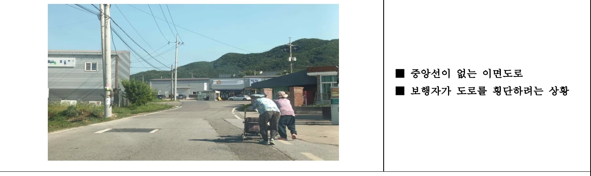

720. 다음 상황에서 가장 안전한 운전방법 2가지는?

- ①전방에 보행자가 도로를 횡단하려 하므로 일시정지 후 보행자의 안전을 확인하고 진행한다.
- ②이면도로이므로 보행자를 보호할 의무가 없어 속도를 올려 진행한다.
- ③뒤따르는 차량이 있다면 비상점멸등을 켜서 위험상황을 알려준다.
- ④경음기를 반복하여 울려 보행자가 횡단하지 못하도록 한다.
- ⑤보행자 바로 앞에서 급정지하여 보행자에게 주의를 준다.
정답 보기
정답
① 전방에 보행자가 도로를 횡단하려 하므로 일시정지 후 보행자의 안전을 확인하고 진행한다.
③ 뒤따르는 차량이 있다면 비상점멸등을 켜서 위험상황을 알려준다.
근거·해설
보행자가 중앙선이 없는 이면도로를 보행하고 있는 경우 안전거리를 두고 서행 또는 일시 정지하여 보행자가 안전 하게 보행할 수 있도록 하여야 한다. 또한, 후방 차량에 위험을 알리기 위해 비상점멸등을 켜는 것이 안전하다.